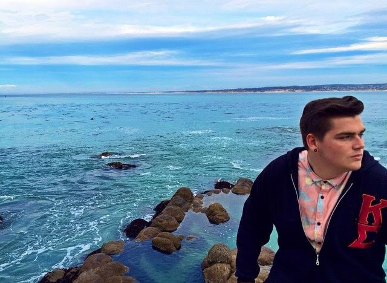
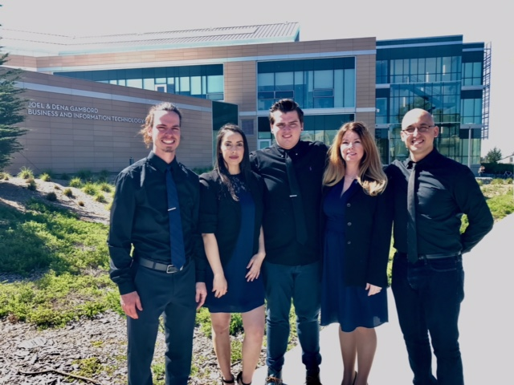
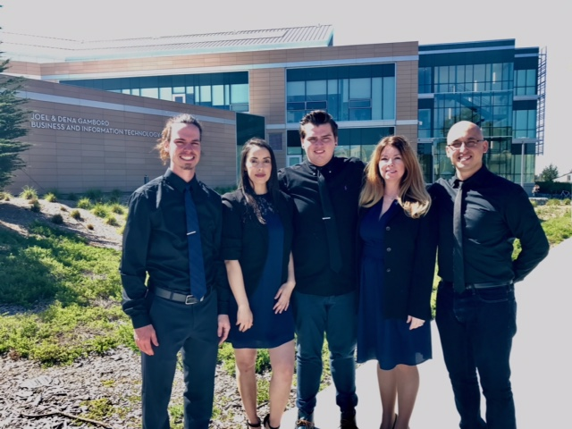

Hello and welcome! I created this site in order to quickly and effectively share, essentially myself, on a virtual platform. With the direction that things are moving in today’s world, it is becoming more evident that there is a need to solicit one’s self digitally. The purpose of this website is to take the place of a hard copy resume that additionally proves to be more convenient and effective for employers to view. The information provided will be continuously updated in an effort to remain as current as can be. Through the different pages provided in this website you will be able to get an expansive view on my; education, work experience, volunteering experience in the local community, and interests and goals that shape the direction I am heading towards. If you are interested in me and my expertise from a employer standpoint do not hesitate to contact (through any method listed in the contact page) and I will be more than happy to meet for conversation. Additionally, if there are any details listed on this site you would like further information or inquiries on just ask and I will provide. Thank you for your time and interest, I hope this site will effectively service your needs.

 

Early Years
Initially from Southern California, I come from a small family and was raised by a single father with the help of grandparents. Seeing their hard work and sense of unity in raising me sparked a determination to be successful through diligent and committed work ethic to provide an easier path for my future family. Starting in my early days of school this belief was strongly implemented in me, as I was placed in advanced classes in my time from elementary schooling to high school. In high school I secured my first job at 16 while participating in athletic teams, leaving me to graduate as a student athlete with a 3.45 GPA.
Education
College
I am currently enrolled as a Business Administration major at California State University Monterey Bay, pursuing a bachelor’s degree in general business. I am set to graduate in May as a part of the Spring 2017 class and will be walking with honors- cum laude. At CSUMB I have taken multiple courses preparing me for the business world through a wide range of topics such as: Finance, Information Systems, Entrepreneurship, Marketing, Management, and eCommerce. These courses have provided information and insight to produce a balanced sense of business knowledge.
Skills Picked Up in the Classroom
| Entreprenuership | Finance | Information Systems | Global Marketing |
|---|---|---|---|
| Identifying Market Opportunity | How to Configure Ratios | Visual Basic for Applications | Foriegn Market Entry |
| Writing a Business Plan | Calculating Interest | Created IS Program for a Business | Different Platforms to Export |
| Learning Start Up Management | How to Analyze a Business's Financials | Complex Self Executing Formulas | Shipping Logistics |
WORK
Apart from the skills I have acquired through my time as a business student at CSUMB, I have also gathered real world experience from working multiple jobs. Though my first job in high school did not service my growth as a strong employee in terms of teaching new skills, it did show me the importance of having such skills in order to never work a lower level job again. After graduating high school and transitioning to college, I quickly found new employment. Over the time I have spent in Monterey I have been fortunate enough to secure employment in multiple facets of business such as; hospitality, retail, food, and accounting. CSUMB Accounts Payable: Student Assistant from April 2015-Current Zumiez: Sales Representative from May 2014- February 2015 PF Changes: Back waiter from February 2014- May 2015 Lighthouse Lodge and Cottages: Front Desk from November 2013-March 2014| Employer | Position | Time Employed |
|---|---|---|
| CSUMB Accounts Payable | Student Assistant | April 2015-Current |
| PF Changs | Back Waiter | February 2014-June 2015 |
| Zumiez | Sales Associate | June 2014-December 2014 |
| Lighthouse Lodge and Cottages | Front Desk | November 2013-March 2014 |
SERVICE
Apart from skills I have acquired through working, I have also gathered experience through various service roles I have fulfilled throughout the community. Such experiences have taught me how to communicate with those I have little in common with and would not typically interact with. Dorothy’s Kitchen- Homeless shelter: Various roles Chamberlains Children Center- Foster home: In home mentor I have also performed various service events through my fraternity, Kappa Sigma, which I have served as Grand Scribe for 2 years- the administrative arm of the chapter that handles all interactions with outside sources along with filing, book keeping, and documentation.Though I have not yet worked in a field I have found true passion in, I am still looking for what fits, knowing that the best work is done for something you enjoy. I have enjoyed working for the companies that I have been employed by, but the majority of industries did not captivate me as needed to dedicate my career to it. The various roles I have served may be unrelated but they did point out which traits reached out to me. With this, I have come to learn I prefer working in environments that keep me moving and thinking, opposed to a desk job filled with a plethora of data entry. Additionally, I have found positions which entailed interacting with others to be more satisfying than those that are conducted independently and separately from others. With knowing what I do and do not like in a work environment, there are specific fields that greatly interest me. Such fields of special interest are professional sports, in the sense I would love to work on the administrative side of a professional sports organization. Additionally, I am fascinated with the idea of working behind the scenes in television production for I appreciate the power television has to occupy and entertain individuals.
Feel free to contact me by any of the methods provided. I will be happy to hear from you any time, day or night. Thank you for your time with viewing my digital site. I look forward to hearing from you soon!
Phone: (909) 724-9001
Email: Nknight@csumb.edu (Preferred)
Mailing Address: 3149 Marina Dr. Marina, CA 93933